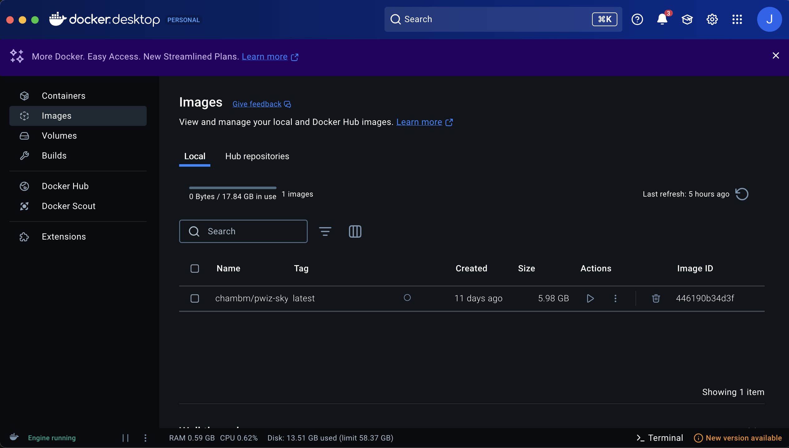

{kind=link}
Welcome & Guide
Welcome to the imzML_Writer documentation page!
imzML_Writer is available as:
A simple standalone executable on both Mac and PC (.app and .exe respectively; WARNING: experimental)
A distributable package on Pypi (for CLI, stable GUI,
pip install imzML-Writer; recommended option)Cloning the Github repo (development mode)
Installation
MS Convert
On all three versions, imzML Writer relies on MS convert to convert raw instrument data into the open format mzML, requiring a working install.
On PC, download the latest msconvert release from ProteoWizard and navigate through the installer. Make sure that msconvert is added to the system PATH, either during installation or by following the instructions here.
On Mac, download Docker and open up the GUI dashboard. Then, you can download the image for MSconvert by opening the Terminal app and running the command:
docker pull chambm/pwiz-skyline-i-agree-to-the-vendor-licenses
This may take a few minutes, as the image is ~5-6 GB. You can verify successful install in the Docker dashboard under the images tab:
{kind=link}
1. Standalone apps
Mac
Download the Github repository and grab the correct distribution for your machine - Apple Silicon for M-chips or Intel for older machines.
Move the appropriate imzML_Writer.app file into your Applications folder. Then double-click the .app bundle to launch the application. Depending on your security settings, Apple may block the launch with the following pop-up:
images - Security popup
If so, click ok (*not move to trash*), navigate to your security settings (System Settings --> Privacy & Security), scroll to the bottom, and click “open anyways” for imzML_Writer.
images - Security override
If docker was installed as above, this should launch the UI and the application is ready for typical operation.
PC
Download the Github repository, find the PC executable folder (easy Filename here) and place it in your documents folder.
images - imzML file structure
Then, open the folder and launch imzML Writer by double-clicking imzML_Writer.exe. This will launch a terminal window and the GUI. Provided msconvert is installed and added to the path, you should be good to go!
1. Python package
Installing as a python package is the recommended option for most users, allowing for both stable GUI use and a command line interface (CLI) for batch processing.
To install, make sure you have Docker (Mac) or MSconvert (PC) installed as above. Then, in your python environment run:
pip install imzML-Writer
Once active, you can easily launch the GUI by creating a python example.py with contents:
import imzML_Writer.imzML_Writer as iw
iw.gui()
Then run the script (python example.py) to launch the GUI. If you already have some imzML files and just want to view them with the scout, restructure example.py:
import imzML_Writer.imzML_Scout as scout
##Call with no arguments opens it empty and you can use the GUI to search for your file
scout.main()
##Call with full or relative pathing to the imzML will open the specified file
path_to_imzML = "/Example/File/path/my_image.imzML"
scout.main(path_to_imzML)
This covers the basic GUI functionality, for further details on running the CLI see the documentation pages.
Contents: